flowchart TD Statistics --> B[Descriptive] Statistics --> C[Inferential]
Describing and visualising data
ETX1100/5900 | Business Statistics
24 November 2026
Welcome
Hello! I’m Fonti 👋
- Your Chief Examiner! (CE)
- fonti.kar@monash.edu
- BSc, MRes, PhD
- Open-source software engineer (UNSW)
- Biodiversity Data Analyst (CSIRO)
- Analytics Lead at non-profit
- Australian Grains Industry (ANU)
It takes a village…
Course content:
It takes a village…
On the ground:
- Susama Mahnaz
- Song Li
Now, your turn!
- Introduce yourself to your neighbours
- Sign into ed-ie.com via on your device (phone or laptop)
- How to use ed-ie
“What do you want want to get out of this unit? (no wrong answers!)”
LINK PLACEHOLDER / QR code
Today’s roadmap
- Unit overview
- Assessments
- AI and tips on how to thrive
- How workshops will run
- Your Excel toolbelt
- 10 MINUTE BREAK
- Taxonomy of statistics
- Data viz
- In-class exercise
Unit overview
Unit learning outcomes
classify the different data types and apply appropriate visualisation tools for effective data presentation (Week 1)
apply probability calculations and interpretations in a given business problem (Week 2)
apply the concept of random sampling to interpret statistics calculated from business data and conduct hypothesis testing (Week 3 - 4)
analyse relationships between business data using appropriate tools (Week 5)
build the simple and multiple regression model in Excel and communicate the results in relevant business contexts (Week 5 -6)
formulate and solve basic business modelling problems in Excel. (Week 7 and throughout)
Assessments
- Weekly take home quiz due on the following Monday except W4, due Sunday*
- **Class moved to a Friday due to public holiday
| Week | Date | Topic | Assessment | In class Activity |
|---|---|---|---|---|
| 1 | 24/11/2026 | Describing and visualising data | Quiz 1 | Exercises 1 |
| 2 | 1/12/2026 | Probability and distributions | Quiz 2 | Exercises 2 |
| 3 | 08/12/2026 | Sampling and estimation | Quiz 3 | Exercises 3 |
| 4 | 15/12/2026 | Testing business claims | Quiz 4* | Exercises 4 |
| 21 – 28/12/2026 | Mid Semester Break | |||
| 5 | 05/01/2027 | Relationships and introduction to simple regression | Quiz 5 Written Assignment |
Exercises 5 |
| 6 | 12/01/2027 | Multiple regression and model evaluation | Quiz 6 | Exercises 6 |
| 7 | 19/01/2027 | Introduction to time series and forecasting | Quiz 7 | Exercises 7 |
| 8 | **29/01/2027 | Integrated business case, communication, and revision |
The (AI) elephant in the room
- GenAI
- Monash policy on AI usage
- Skipping to the end, neuroscience of learning
- My priority: I want to see you win (but I need you to try as well)
Your education is in your hands
How to thrive (with AI)
- Be curious
- Anything unclear - ask away!
- Discuss with fellow students, tutors, post a question on ed-ie.com
- Question everything
- Participate in class actively
- Consider putting your phone on silent unless you need to be on call
- Take notes
- Engage with learning materials (quizes + exercises)
- Read materials
- Doing materials with friends > with AI
- Revise notes
- Practice
- You’re learning a new skill, you’re suppose to suck at the start
- Find those weak spots *- Fill them with readings, research, AI suggested exercises
We have your back
No such thing as a “dumb” question
We are learning too
In-person and Zoom Consultations
- Fonti - XX - XX
- Susama -
Question? fonti.kar@monash.edu with subject ETX1100/5900
Monash Student Wellbeing support
Recommended Text
Moodle>Learning>Additional information and resources
Your Excel toolbelt
Let’s get your set up with Excel
Access Microsoft 365 FREE!
- Go to Microsoft Online, enter your Monash email address and select Next.
- Enter your Monash account details into the Monash login page.
- You’ll be redirected to Microsoft Office Online.
- In the top-right corner, click Install apps.
- Select Microsoft 365 apps from the drop-down menu.
- Install Office on your device, though we only need Excel only
ToolPak - an add on for Excel
Windows
- Click the
Filemenu >Options>Add-Inscategory - In the
Managebox, selectExcel Add-ins> Go. - In the
Add-Insbox, check theAnalysis ToolPakcheck box >OK.
Mac
- Go
Toolsin the top navbar menu >Excel Add-ins. - In the Add-Ins available box, check the
Analysis ToolPakcheck box and click OK.
Excel orientation: cells and references
An Excel cell holds a number, text or formula. Its column letter and row number give its address: A1 contains 6 here.
The Name Box shows the selected address; the formula bar shows its contents.
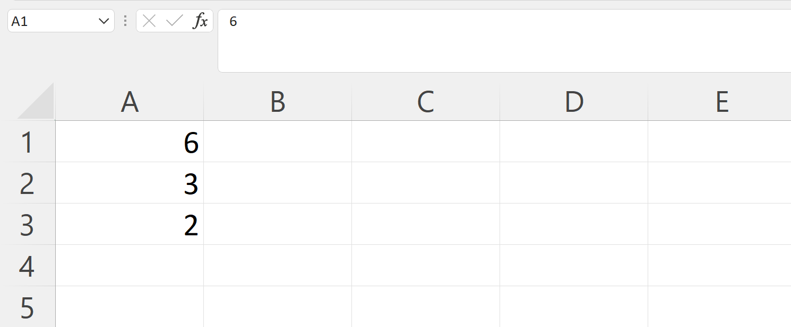
Excel orientation: Write an formula
- Begin a formula with
= - Arithmetic operators include
+,-,*,/and^.
- Enter
=A1*B1inC1to multiply values inA1andB1- Can also click on the cells to refer to them
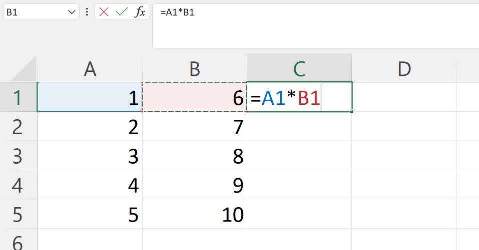
Excel orientation: Fill a formula into adjacent cells
Enter
=A1*B1inC1.Double click on the fill handle at the cell’s bottom-right corner to copy the formula down.
Alternatively, you can drag the formula down
Relative references adjust:
C2gets=A2*B2;C5gets=A5*B5and displays50.
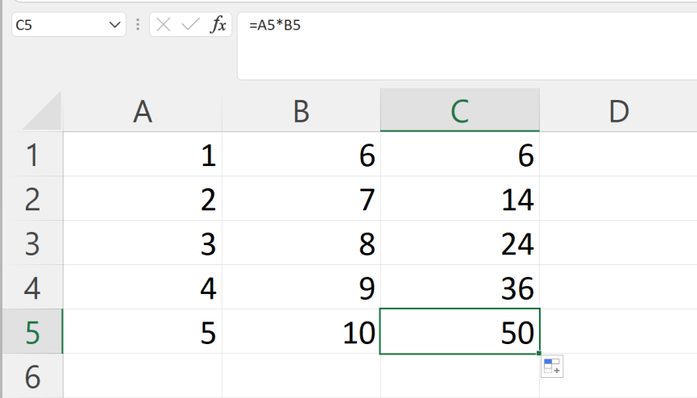
Excel orientation: Use a built-in function
A function performs a calculation using inputs in parentheses.
=SQRT(C4)returns the square root of the value inC4. HereC4is36, so the result is6.Find available functions under
Formulas>Insert Function
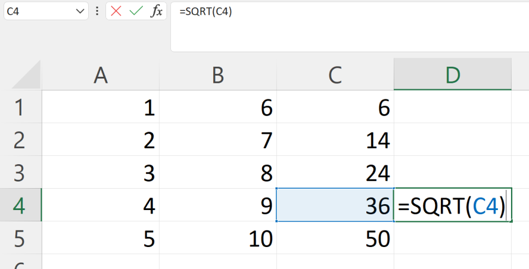
Excel orientation: Give a function a cell range
- Rather than giving a single value in a cell, we want to refer to a range of values
A colon denotes a consecutive cell range: A1:A5 includes five cells.
=SUM(A1:A5) adds 1 through 5 to give 15. A:A refers to all of column A.
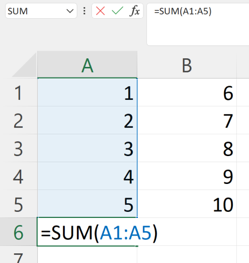
Break
Taxonomy of statistics
Statistics
…is the discipline that concerns the collection, organization, analysis, interpretation, and presentation of data.
Data can be anything! e.g. surveys, election votes, stock market, health data, orders on UberEats, views on a video
In business statistics, we work with data and analyses to make better business or economic decisions
Data collection
Population
- All members of a group that you want to draw a conclusion upon.
- Parameters are used to describe Populations
- Greek letters in math notations \mu for population mean, \sigma for population standard deviation
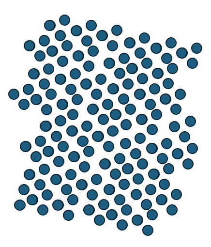
e.g. All voters in an election, all Telstra shareholders, all invoices submitted to Medicare for rebate in NSW
Data collection
Sample
- A subset that is representative of the population used analysis
- (Ideally) chosen randomly where every individual has equal chance of selection
- Statistics are used to describe a Sample
- Roman letters in math notations \bar{x} for sample mean and s for sample standard deviation

e.g. Random survey of 20 travellers at Brisbane airport, random sample of male lab rats for an experiment
Bias in sampling
Discuss potential issues with bia with these data collections scenarios
- A marketing agency surveys 5,000 people through TikTok to estimate how much time Australians spend on social media.
- A record label analyses Spotify listening histories to identify Australia’s most popular music genre.
Branches of Statistics
- Descriptive
- Summarise, describe, simplify data at hand
- e.g. The average speed was 37.58 km/h for the men’s 100m sprint in 2024
- Inferential
- To infer/make educated guess about the wider population
- e.g. Using the average running speed for 30 men in Caufield, we estimated the population average for men in VIC.
Types of Variables
Categorical
- Qualitative (non-numerical) data organised in groups
- Nominal, no natural order
- e.g. cat breeds, provinces,
- Ordinal, meaning ordering
- e.g. education level, poor/average/great ratings
- Nominal, no natural order
flowchart TD Data --> B[Categorical] Data --> C[Numerical] B --> D[Nominal] B --> E[Ordinal] C[Numerical] --> F[Discrete] C --> G[Continuous] classDef categorical fill:#FFD54F,stroke:#8A6D00,color:#000; class B,D,E categorical;
Types of Variables
Numerical
- Quantitative data organised in groups
- Discrete, countable
- e.g. number of chicken nuggets sold
- Continuous, requires a measuring process
- e.g. grams of protein, price for stock
- Discrete, countable
flowchart TD Data --> B[Categorical] Data --> C[Numerical] B --> D[Nominal] B --> E[Ordinal] C[Numerical] --> F[Discrete] C --> G[Continuous] classDef numerical fill:#FFD54F,stroke:#8A6D00,color:#000; class C,F,G numerical;
Statistical lingo
Talking about numerical data
- Central tendency - what is the typical value like in this data?
- Spread - how much variation exists is the data?
- Shape - where is the bulk of the data?
flowchart TD Data --> B[Categorical] Data --> C[Numerical] B --> D[Nominal] B --> E[Ordinal] C[Numerical] --> F[Discrete] C --> G[Continuous] classDef numerical fill:#FFD54F,stroke:#8A6D00,color:#000; class C,F,G numerical;
Central tendency
What is the typical value like in this data?
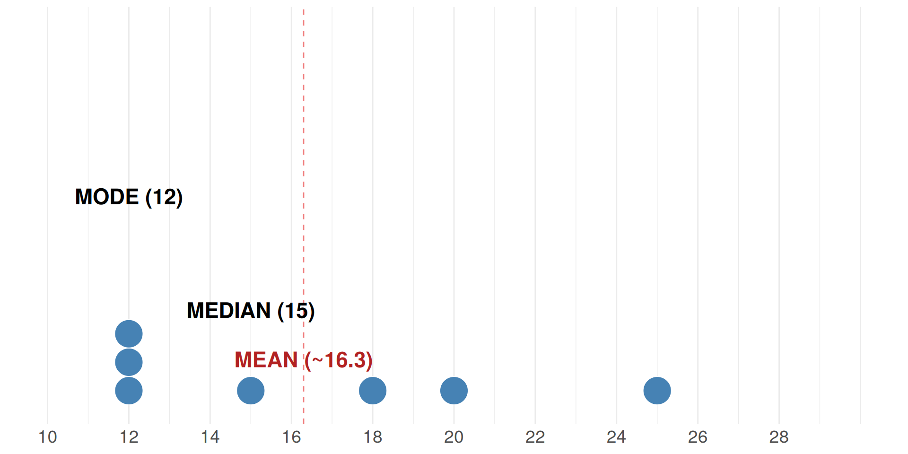
=MODE(...)the most common value=MEDIAN(...)the middle value=MEAN(...)the average- Sum all values and divide by total number of values (n)
\bar{x} = \frac{1}{n} \sum_{i=1}^{n} x_i
Spread - sample standard deviation s
How much variation (or disperson) exists is the data?
=STDEV.S(...)
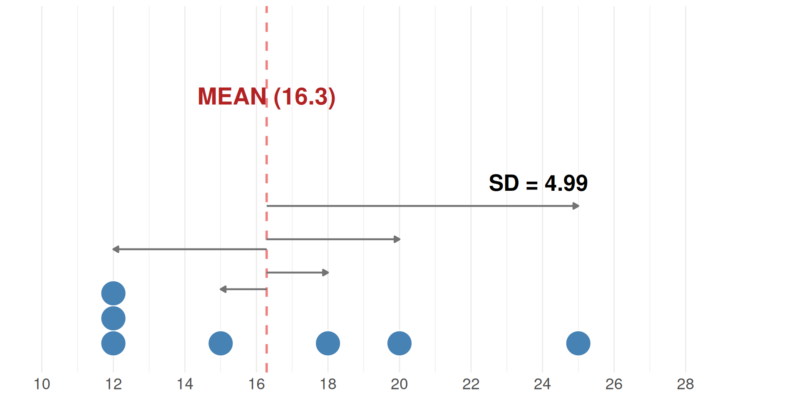
s = \sqrt{\frac{\sum_{i=1}^{n} (x_i - \bar{x})^2}{n - 1}}
- x_i: Each individual data point in the sample
- \bar{x}: Sample mean
- n: Total number of observations in the sample
- Unit is the same as the original variable
Spread - sample variance s^2
=VAR.S(...)

\begin{aligned} s^2 &= \left( \sqrt{\frac{\sum_{i=1}^{n} (x_i - \bar{x})^2}{n - 1}} \right)^2 \\ &= \left(s\right)^2 \end{aligned}
- Squared units e.g. \text{cm}^2
Spread - population and sample
| Data available | SD | Variance | Excel |
|---|---|---|---|
| Sample used to estimate a population | \displaystyle s=\sqrt{\frac{\sum_{i=1}^{n}(x_i-\bar{x})^2}{n-1}} | s^2=(s)^2 | STDEV.S, VAR.S |
| Entire population | \displaystyle \sigma=\sqrt{\frac{\sum_{i=1}^{N}(x_i-\mu)^2}{N}} | \sigma^2=(\sigma)^2 | STDEV.P, VAR.P |
Otis Elevator Company - a worked example
- Otis Elevator Company uses 1-inch-diameter elevator rails.
- There are two potential suppliers.
- To decide between the suppliers, the manager obtains a sample of 10 rails from each supplier.
Which supplier is preferred?
Otis Elevator Company - Watch me 👀
For Supplier 1
Use Excel to calculate measures of:
- central tendency (
MEAN,MODE,MEDIAN) - spread (
STDEV.S,VAR.S)
Otis Elevator Company - You try ✏️
For Supplier 2
Use Excel to calculate measures of:
- central tendency (
MEAN,MODE,MEDIAN) - spread (
STDEV.S,VAR.S)
Otis Elevator Company - bring it together 🙌
Use Excel to calculate and compare measures of:
- central tendency (
MEAN,MODE,MEDIAN) - spread (
STDEV.S,VAR.S)
Solution
- Mean and median: 1 inch for both suppliers
- SD and Variance: Supplier 2 > Supplier 1
Supplier 1 preferred: less variation around the mean.
Talking about numerical data
- Central tendency - what is the typical value like in this data?
- Spread - how much variation exists is the data?
- Shape - where is the bulk of the data?
flowchart TD Data --> B[Categorical] Data --> C[Numerical] B --> D[Nominal] B --> E[Ordinal] C[Numerical] --> F[Discrete] C --> G[Continuous] classDef numerical fill:#FFD54F,stroke:#8A6D00,color:#000; class C,F,G numerical;
Data viz whiz
A picture is worth so much more
We visualise data to help us understand it’s features more efficiently
- This box and whisker plot (aka. boxplot)
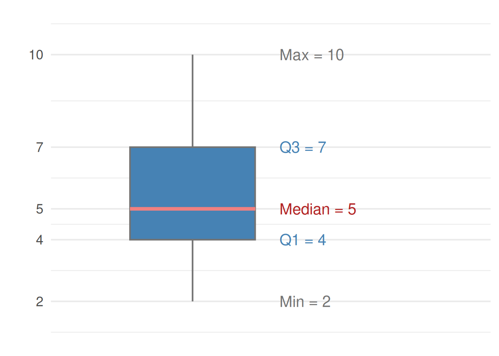
What type of chart
The data type determines what chart is used for visualisation
Nominal & Ordinal Discrete Data Numeric data Bar Chart Pie Chart Bar Chart Histogram Box plot Great for Great for illustrating illustrating Great for illustrating the distribution relativity portions or particularly for shares ordinal data
Task 1: Real Estate Data
We wish to compare the distribution of house prices for properties within/outside school zone Refer to the workshop data set under Module 1. Refer to the Price column and answer the following questions. a. Generate summary statistics of house prices for properties within/outside the school zone b. Draw two frequency percentage histograms. c. Draw two box plots 24
Source: Workshop_slides_Week_1-ETX1100_ETX5900 Workshop solutions_fullPage.pdf, page 23
Instructions for Summary Statistics
- Highlight the relevant column and check ‘Labels in the first row’
- Click on Data tab and choose 3. Select Descriptive Statistics 6. Check ‘output range’ box and select a
- Click on Data Analysis 4. Click ‘OK’ blank cell
- Check the ‘Summary statistics’ box
- Click OK
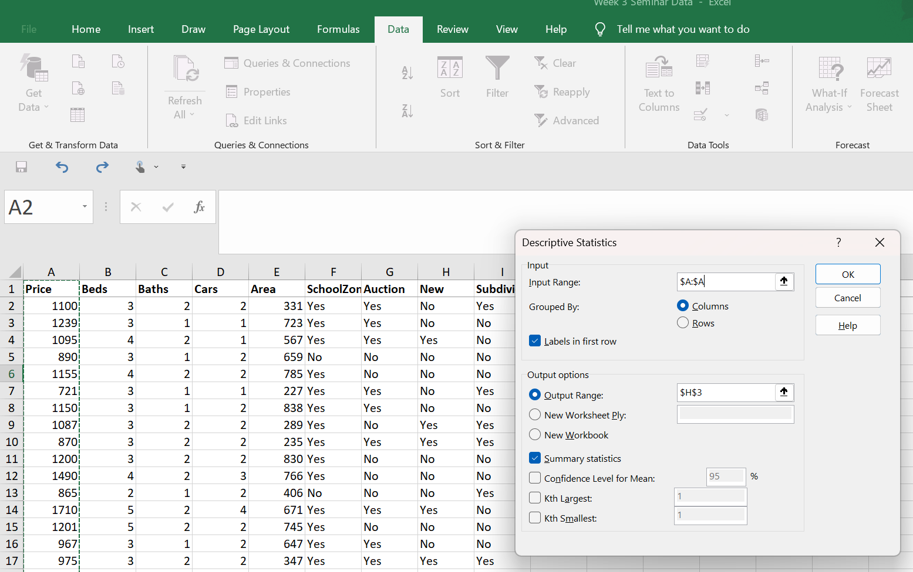
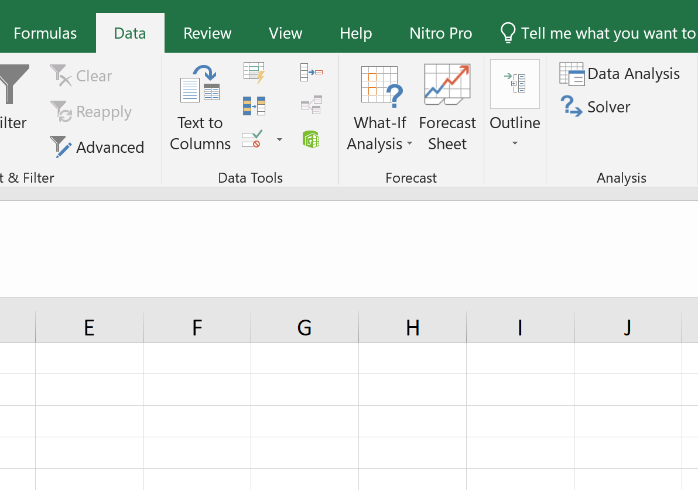
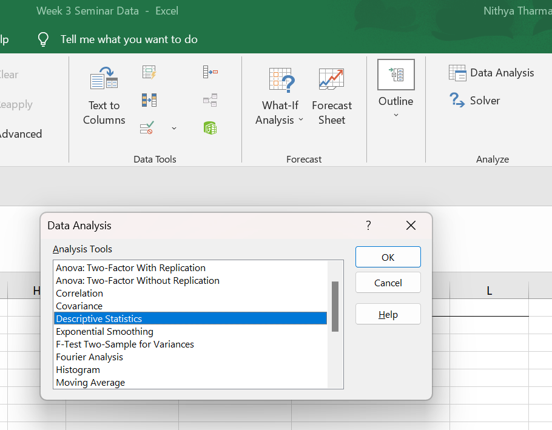
Average house prices
Let’s compare the distribution of house prices within/outside school zone Price (School Zone) Price (Outside School Zone) Mean 1258.79 1046.04 Median 1225.50 980.00 Var 178200.41 130871.38 Stdev 422.14 361.76 Skewness 1.76 2.74 Q1 987.25 858.00 Q3 1405.25 1180.00 IQR 418.00 322.00 Range 3195.00 2430.00 26
Source: Workshop_slides_Week_1-ETX1100_ETX5900 Workshop solutions_fullPage.pdf, page 25
Average house prices
Let’s compare the distribution of house prices within/outside school zone Price (School Zone) Price (Outside School Zone) Mean 1258.79 1046.04 Median 1225.50 980.00 Var 178200.41 130871.38 Stdev 422.14 361.76 Skewness 1.76 2.74 Q1 987.25 858.00 Q3 1405.25 1180.00 IQR 418.00 322.00 Range 3195.00 2430.00 Houses in the school zone tend to be more expensive, with higher mean and median 27
Source: Workshop_slides_Week_1-ETX1100_ETX5900 Workshop solutions_fullPage.pdf, page 26
Measures of Variability
Price (School Zone) Price (Outside School Zone) - Range Mean 1258.79 1046.04 - Inter-quartile Median 1225.50 980.00 range (IQR) Var 178200.41 130871.38 Stdev 422.14 361.76 - Variance Skewness 1.76 2.74 - Standard Q1 987.25 858.00 deviation Q3 1405.25 1180.00 IQR 418.00 322.00 - Coefficient of Variation (CV) Range 3195.00 2430.00 What do these statistics measure? 28
Source: Workshop_slides_Week_1-ETX1100_ETX5900 Workshop solutions_fullPage.pdf, page 27
Measures of Variability
Range to The difference between the maximum and the minimum values. It relies just on the two most extreme values in the dataset. =MAX(…)-MIN(…) Interquartile Range (IQR) to the spread of the middle 50% of the data. IQR =Q3 -Q1 Q1 =QUARTILE.EXC(…,1) Q3 =QUARTILE.EXC(…,3) Variance: average of the squared deviations (distance) from the mean =VAR.S(…) Standard Deviation = Variance . =STDEV.S(…) Standard deviation Coefficient of Variation (cv): measures relative variation = Mean x 100% 29
Source: Workshop_slides_Week_1-ETX1100_ETX5900 Workshop solutions_fullPage.pdf, page 28
Variability of house price
Price (School Zone) Price (Outside School Zone) Mean 1258.79 1046.04 Median 1225.50 980.00 Var 178200.41 130871.38 Stdev 422.14 361.76 Skewness 1.76 2.74 Q1 987.25 858.00 Q3 1405.25 1180.00 IQR 418.00 322.00 Range 3195.00 2430.00 There is a greater degree of absolute variability of houses in the school zone and only slightly lower relative variability. Range: $3.195m vs $2.43m; IQR:$418k vs $322k; standard deviation: $422k vs $362k CV: 33.54% vs 34.45% (standard deviation/mean *100%) 30
Source: Workshop_slides_Week_1-ETX1100_ETX5900 Workshop solutions_fullPage.pdf, page 29
Shape of Distributions
Skewness measures how symmetric the distribution is - Positive statistic to positive skewed, right tail longer than the left tail - Negative statistic to negative skewed, left tail longer than the right tail Left-Skewed Symmetric Right-Skewed (Skewness < 0) (Skewness = 0) (Skewness > 0) Mean < Median Mean = Median Mean > Median Some very “low” values An equal number of “low” & Some very “high” values The mean is pulled left toward “high” values. The mean stays The mean is pulled right toward the “tail” of the distribution in the centre of the distribution the “tail” of the distribution
Source: Workshop_slides_Week_1-ETX1100_ETX5900 Workshop solutions_fullPage.pdf, page 30
Visualization of Numerical Data using Box Plot
Max A graphical representation of the data based on the 5-number summary. Refer to page 121 of the textbook. Q3 Mean Median Q1 Min 32
Source: Workshop_slides_Week_1-ETX1100_ETX5900 Workshop solutions_fullPage.pdf, page 31
Shape of Distributions and Box Plots
Source: Workshop_slides_Week_1-ETX1100_ETX5900 Workshop solutions_fullPage.pdf, page 32
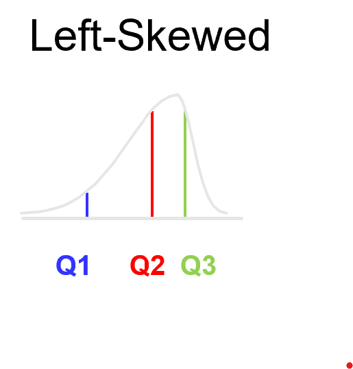
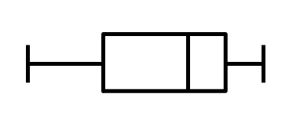
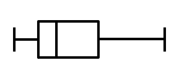
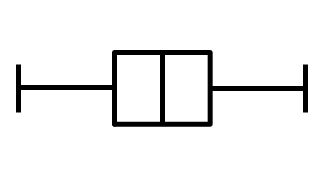
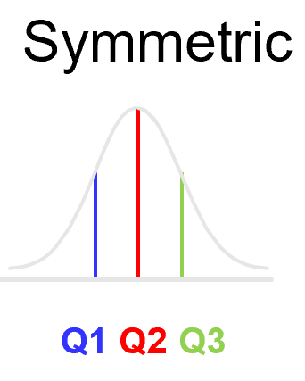
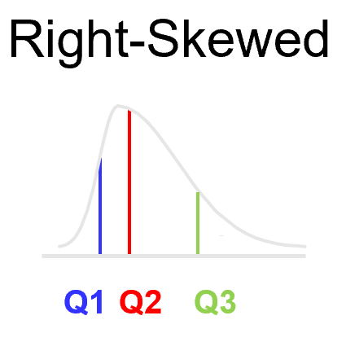
Example: Shape of the house price distribution
Price (School Zone) Price (Outside School Zone) Mean 1258.79 1046.04 Median 1225.50 980.00 Var 178200.41 130871.38 Stdev 422.14 361.76 Skewness 1.76 2.74 Q1 987.25 858.00 Q3 1405.25 1180.00 IQR 418.00 322.00 Range 3195.00 2430.00 - Both distributions are positively skewed. - There are some properties that are very highly priced 34
Source: Workshop_slides_Week_1-ETX1100_ETX5900 Workshop solutions_fullPage.pdf, page 33
Visualization of Numerical Data using Histograms
House Prices School Zone Histogram of House Prices (Outside School Zone) 0.3 16 14 0.25 12 0.2 10 Percentage 8 0.15 6 0.1 4 2 0.05 0 0 Prices ($) 35
Source: Workshop_slides_Week_1-ETX1100_ETX5900 Workshop solutions_fullPage.pdf, page 34
Visualization of Numerical Data using Box Plot
Insert > Histogram > Box and Whisker You can plot multiple data series on the same plot As long as they are of the same units! 36
Source: Workshop_slides_Week_1-ETX1100_ETX5900 Workshop solutions_fullPage.pdf, page 35
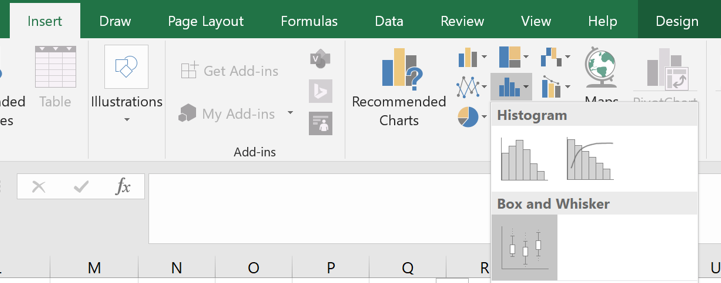
Visual from source page 35.
Visualization of Numerical Data using Box Plot
- Houses outside the school zone tend to be less expensive
- The distribution is less variable in absolute terms (tighter box) for houses outside the zone and only marginally higher (or almost the same) in terms of relative variability
- There are relatively more positive outliers for houses within the school zone. 37
Source: Workshop_slides_Week_1-ETX1100_ETX5900 Workshop solutions_fullPage.pdf, page 36
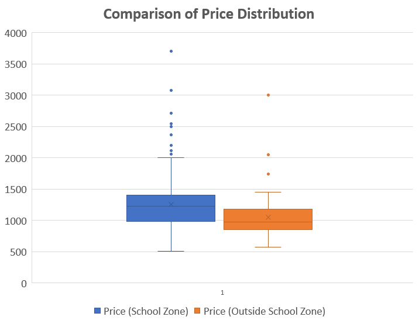
Visual from source page 36.
Task 2: Visualisation_Real Estate Data
Refer to the RealEstate worksheet Variable Type of Data Type of graph Price ($’000) Numeric (continuous) No of bedrooms Numeric (discrete) 1. Construct relative frequency tables for the number of bedrooms 2. Draw an appropriate graph.
Source: Workshop_slides_Week_1-ETX1100_ETX5900 Workshop solutions_fullPage.pdf, page 37
Solutions
Refer to chart 1. Construct a relative frequency table for the variable “No of Bedrooms” 2. Draw an appropriate graph. Relative Beds Frequency Distribution of number of bedrooms Frequency 45.00% 2 29 8.81% 40.00% 35.00% 3 138 41.95% 30.00% Percentage 4 108 32.83% 25.00% 20.00% 5 45 13.68% 15.00% 6 8 2.43% 10.00% 8 1 0.30% 5.00% 0.00% 2 3 4 5 6 8 Grand Number of bedrooms 329 100.00% Total
Source: Workshop_slides_Week_1-ETX1100_ETX5900 Workshop solutions_fullPage.pdf, page 38
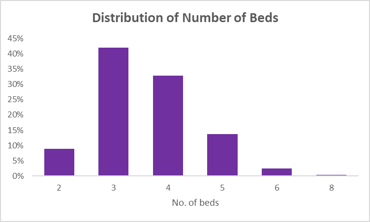
Visual from source page 38.
Task 3: Visualisation for Continuous Data_Price
- Construct a relative frequency table for the variable “Price”
- Draw an appropriate graph. Bin Range Frequency Relative Frequency 500-999 1000-1499 1500-1999 2000-2499 2500-2999 3000-3499 3500-3999
Source: Workshop_slides_Week_1-ETX1100_ETX5900 Workshop solutions_fullPage.pdf, page 39
1. H i g h l i g h t o n e d a t a cel l
- Insert to Pivot table (in Mac Data to Pivot table)
- I n ser t to P i v o t t a b l e (in M a c Data to P i v o t t ab l e ) 3 . S e l e c t e xi s t i n g w o r k s h e e t 4 . S p e c i f y t h e c el l l o c a t i o n toOK 5 . D r ag a n d d r o p p r i c e t o t h e ’ R o w s ’ q u a d r a n t 6 . D r ag a n d d r o p p r i c e ag ai n t o t h e ’ v a l u e s ’ q u a d r a n t P i v o t T a b l e
- . .. L
- Price ($’o00) l I 1100 - 4 1095 – -
- 1150
- 1087 870 120 0
Source: Workshop_slides_Week_1-ETX1100_ETX5900 Workshop solutions_fullPage.pdf, page 40
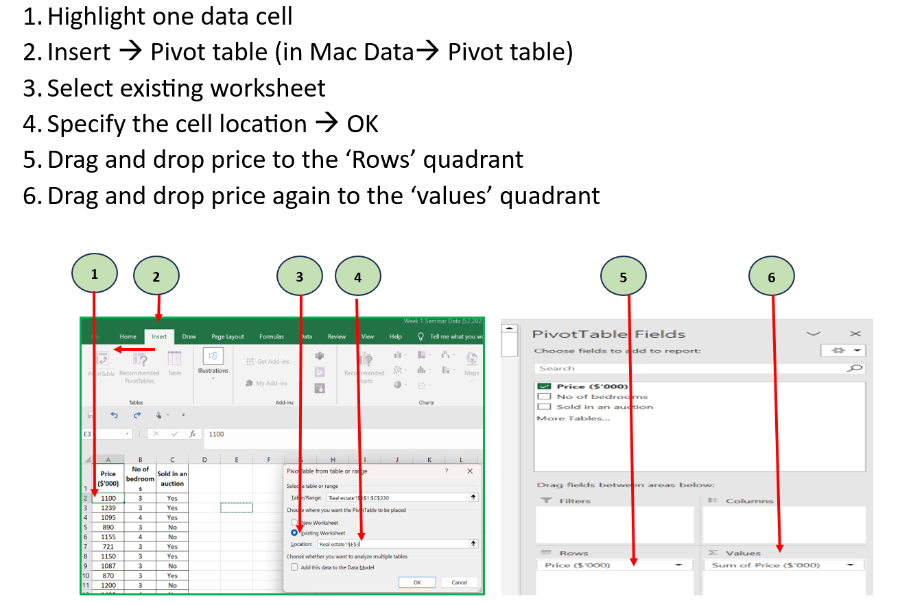
Visual from source page 40.
C h a n g e t h e v a l u e fi e ld S e l e c t ’ V a l u e fi e l d S h o w v alu e s a s - > % o f R i g h t c li c k o n a n y o f t h e
s e t t i n g s ’ s u m o f P r i c e’ to se t ti n g s ’ -> s u m m a r i s e G r a n d Total v a l u e s in t h e fi r s t c o l u m n C o u n t o f Price v a l u e fi e l d b y - > c o u n t ( P r i c e $ ’ 0 0 0} P r ic e ($’o00) 0 . 3 0% 550 0 . 3 0% 5 70 0 . 3 0% 0 . 3 0% 0 . 3 0% — 64 S 0 . 3 0% 0 . 3 0% 65 0 0. 61% 0 . 3 0% 0.61% … 0 . 3 0% 0 . 3 0% 0 . 3 0% S e l e c t G r o u p (T he w i n d o w C h a n g e : s t a r t i n g a t 50 0, Final Table T h i s is t h e c r i t e r i a f o r g r o u p i n g o n t h e r i g h t w i l l p o p up) end inR at 3 7 0 0 , bv 500 G ro up in g X Price ($’000) - C o u nt o f Price ($’000) A uto 500-999 31.61 Au to 1000-1499 52.58% St art ing at: 505 5 t a rt i n g at: 500 1500-1999 10.64 .Ending at: 3700 2000-2499 2.74% E n d i n g at: 3700 By: , o oo 2500-2999 1.52 By: 3000-3499 0.61% Cancel 350()..3999 Can c el G ra nd T o b i
Source: Workshop_slides_Week_1-ETX1100_ETX5900 Workshop solutions_fullPage.pdf, page 41
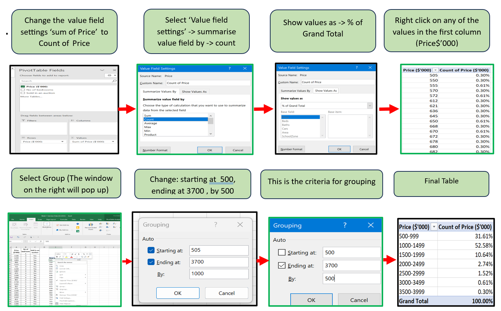
Visual from source page 41.
1. Highlight the pivot table
- Highlight the pivot table
- Insert a bar char t
- To change the bar chart to a histo gram, click on any o f the bars in the bar chart
- Right click and Select f o r ma t data series
- Change the gap w i dth to O (zero) OlstnbtJtJonof pncl! Format Data Series X I 11
Source: Workshop_slides_Week_1-ETX1100_ETX5900 Workshop solutions_fullPage.pdf, page 42
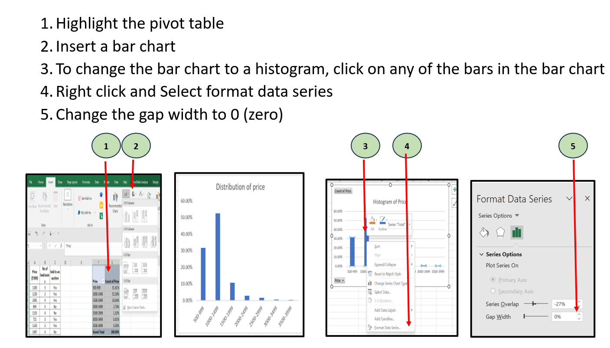
Visual from source page 42.
Solutions for Task 3
Relative Bin Range Frequency Frequency 500-999 104 31.61% 1000-1499 173 52.58% 1500-1999 35 10.64% 2000-2499 9 2.74% 2500-2999 5 1.52% 3000-3499 2 0.61% 3500-3999 1 0.30%
Source: Workshop_slides_Week_1-ETX1100_ETX5900 Workshop solutions_fullPage.pdf, page 43
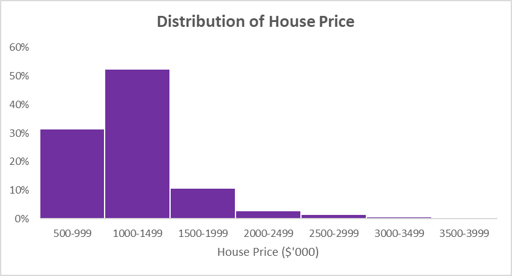
Visual from source page 43.
Key Takeaways
Key Takeaways - Basic Statistical Concepts - Data need not be numeric, it can be categorical and discrete - Constructing frequency tables of data using Pivot Tables - Charting different types of data
Source: Workshop_slides_Week_1-ETX1100_ETX5900 Workshop solutions_fullPage.pdf, page 44